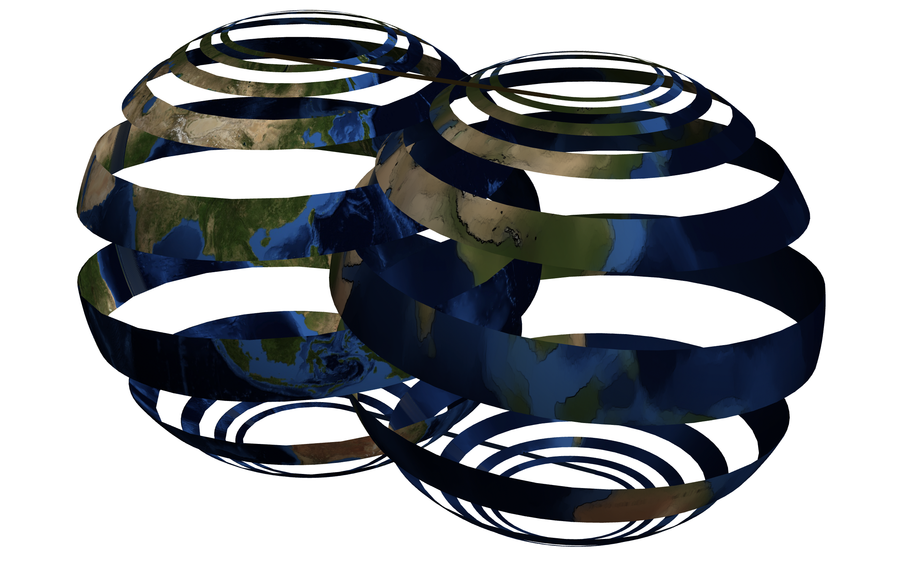
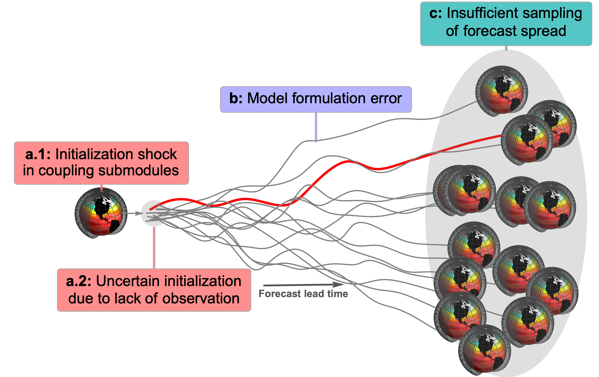
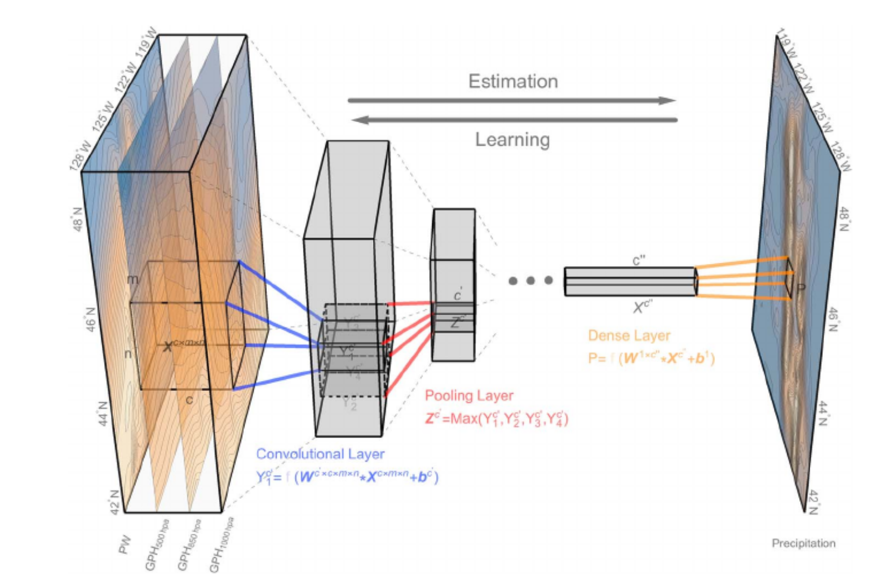
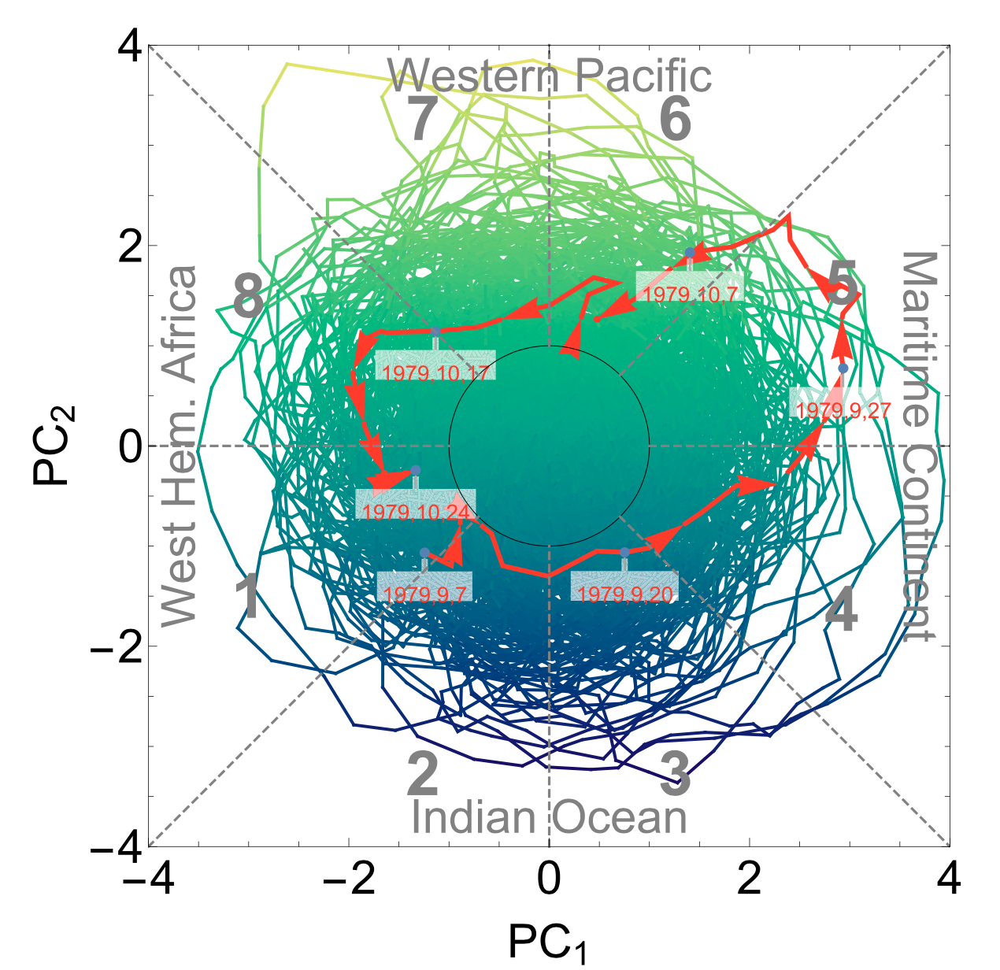
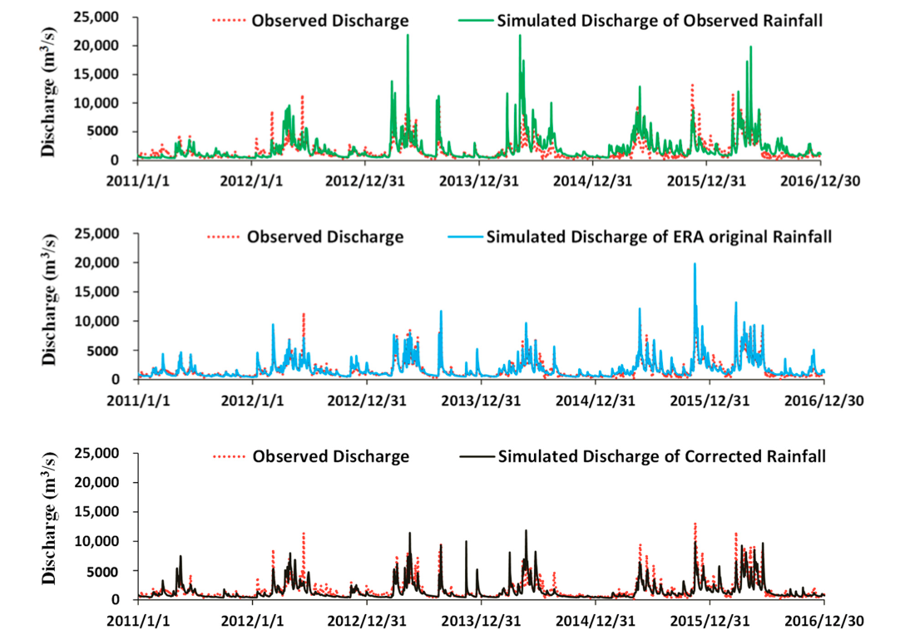

|
|
|
|
Baoxiang Pan
Research Scientist
Lawrence Livermore National Lab
Livermore, CA
pan11 at llnl.gov
[GitHub]
[Google Scholar]
[CV]
|
I am a research scientist at Lawrence Livermore National Lab. My research interests are in climate modeling and machine learning.
News
[Sep 2021] Our work on RADA was accepted to JAMES.
Publications
|

|
Learning to correct climate projection biases
Baoxiang Pan, Gemma Anderson, Andre Goncalves, Donald Lucas, Celine Bonfils, Jiwoo Lee, Yang Tian, Hsi-Yen Ma
In Journal of Advances in Modeling Earth Systems, 2021.
[Paper]
[Code]
[Supplemental]
|
|

|
Improving seasonal forecast using probabilistic deep learning
Baoxiang Pan, Gemma Anderson, Andre Goncalves, Donald Lucas, Celine Bonfils, Jiwoo Lee
Under review in Journal of Advances in Modeling Earth Systems, 2021.
[Paper]
|
|

|
Improving precipitation estimation using convolutional neural network
Baoxiang Pan, Kuolin Hsu, Amir AghaKouchak, Soroosh Sorooshian
In Water Resources Research, 2019.
[Paper]
[Supplemental]
|
|

|
Precipitation prediction skill for the West Coast United States: From short to extended range
Baoxiang Pan, Kuolin Hsu, Amir AghaKouchak, Soroosh Sorooshian, Wayne Higgins
In Journal of Climate, 2019.
[Paper]
|
|

|
Improving monsoon precipitation prediction using combined convolutional and long short term memory neural network
Qinghua Miao, Baoxiang Pan, Hao Wang, Kuolin Hsu, Soroosh Sorooshian
In Water, 2019.
[Paper]
|
|